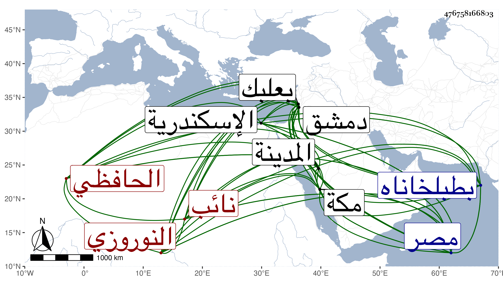

0902Sakhawi.DawLamic.ITO20230111-ara1.EIS1600.476758166803
Biography ID: 476758166803
247
جانبك النوروزي نوروز الحافظي نائب دمشق ويعرف بنائب بعلبك . صار بعد أستاذه للمؤيد ثم عمل بعده خاصكيا إلى أن أمره الظاهر جقمق عشرة وصار من رءوس النوب ثم جهزه إلى المدينة النبوية لقمع المفسدين بها ، فأقام هناك سنين وحمدت سيرته وشجاعته مع اصابته بجراحة من العرب في رقبته ودخل سريعا للاستشفاء للقبر الشريف ثم رجع إلى مصر إلى أن أرسله لمكة أمير الترك بها فأقام أيضا مدة وأنعم عليه وهو هناك باقطاع شريكه تغري برمش الفقيه ثم رسم بعوده إلى مصر بعد اخراج الاقطاع المشار إليه لبردبك التاجي المستقر في امرة الترك عوضه فقدمها صبحة خلع الظاهر نفسه وسلطنة ولده فأنعم عليه زيادة على أقطاعه بطبلخاناه إلى أن استقر به الأشرف في نيابة اسكندرية بعد يونس العلائي سنة ثمان وخمسين فأقام بها حتى مات في مستهل صفر سنة خمس وستين عن نحو الثمانين ، وكان شجاعا مقداما كريما متواضعا خيرا نادرة في أبناء جنسه جمع بين الشجاعة والتواضع والكرم والديانة رحمه الله .
